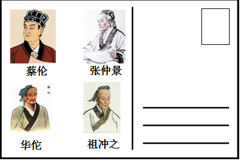
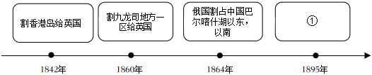
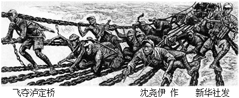

2018年北京市中考历史试题 · 选择题 第11、12、13、14、15题
11．（3分）某校学生开展中国古代文明系列明信片设计活动，如图明信片设计稿的主题是（ ）

A．科学技术发达B．医学领先世界
C．手工技艺精湛D．绘画成就卓越
12．（3分）如图示意图从某个角度反映了中国近代民族危机的不断加深，其中①应为（ ）

A．俄国割占外兴安岭以南、黑龙江以北
B．允许日本在通商口岸投资开设工厂
C．割辽东半岛、台湾、澎湖列岛给日本
D．允许列强驻守北京到山海关铁路沿线要地
13．（3分）社会变化反映在人们生活的各个方面，以下是上海白渡桥平均每天通行情况表（单位：次）。材料反映出（ ）
时间 | 人力车 | 马车 | 轿子 | 自行车 | 汽车 | 有轨电车 |
1889年 | 544 | 9 | 11 | 0 | 0 | 0 |
1926年 | 14600 | 0 | 0 | 3459 | 3936 | 922 |
A．等级观念的消失B．娱乐方式的多样化
C．民族工业的发展D．交通工具的近代化
14．（3分）某校排练了一部历史剧，其中一句台词是：请“民主”和“科学”两位先生来救治中国政治上、道德上、思想上的一切黑暗。据此判断在这部历史剧中表现了（ ）
A．太平天国运动B．辛亥革命
C．新文化运动D．北伐战争
15．（3分）如图反映了红军长征中的一个重大历史事件。《长征组歌》中描述这个历史事件的歌词是（ ）

A．遵义会议放光辉，全党全军齐欢庆
B．昼夜兼程二百四，猛打穷追夺泸定
C．雪山低头迎远客，草毯泥毡扎营盘
D．陕甘军民传喜讯，征师胜利到吴起